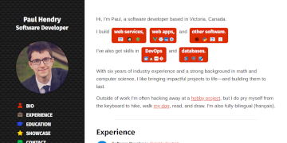

Hi, I'm Paul, a software developer based in Ottawa, Canada.
 and
and
With six years of industry experience and a strong background in math and computer science, I like bringing impactful projects to life—and building them to last.
Outside of work I'm often hacking away at a hobby project, but I do pry myself from the keyboard to hike, walk my dog, read, and draw. I'm also fully bilingual (français).
{kind=link}
Experience
-
Senior Software Developer, Art & LogicJune 2019 – Present
At A&L I've been building a complex web application in Django and Vue.js.
-
Software Developer, Reliable ControlsSeptember 2017 – June 2019
At Reliable I modernized a data visualization and reporting product built in ASP.NET and Dojo Toolkit. While continuing to deliver features and stability improvements, I led a migration to Webpack and TypeScript, established a "Clean Architecture" design for the back-end, and built a Vue.js component library for use as a common foundation across all of Reliable's web-based products.
Throughout, I leveraged my Agile development experience to guide project planning and sprint meetings, helping my team to always work at its best.
-
Software Developer, TelmedIQNovember 2016 – August 2017
I tackled the challenges of building a stable foundation out of the company's fast-moving startup roots. In addition to Django and Angular development on the core product, I organized sprint retrospectives and helped coach the team on Agile processes, which provided concrete data we were able to use to improve.
-
Systems Developer, Tesera SystemsApril 2016 – October 2016
I built skills in front-end web development with React and Redux, and in back-end development with Node. As part of a very small distributed team, I also tackled AWS DevOps, UI/UX design, and product management as needed. I pushed hard to introduce code reviews and unit test coverage to the team's lightweight processes, reducing the rate of defects. The highly-dynamic remote workplace and unfamiliar tech stack challenged me to be adaptable and independent, and to focus on strong communication.
-
Software Developer, Magnet ForensicsMay 2013 – March 2016
Over my first two years at Magnet, I focused on developing their Internet Evidence Finder software in C#, which on top of application development involved UI design, software architecture design, low-level filesystem and database knowledge, and very thorough quality assurance. I spearheaded several large features and architectural improvements.
Later on, I transitioned to a newly-formed "Internal Tools Developer" role, where I worked independently on redesigning the core product's licensing system, in addition to collaborating with a small team to build test automation tooling.
Education
-
Bachelor of Mathematics, Joint Honours Computer Science / Combinatorics & Optimization, University of Waterloo2009 – 2013
My studies were focused on computer science, cryptography, pure mathematics, and psychology. I also did two four-month research assistantships (one part-time and one full-time) where I implemented privacy-preserving messaging software and participated in the CRYSP research group.
Showcase
I love having a side project on the go; sometimes it's for learning, sometimes it's for a challenge, and sometimes it's just for expression. Here's some of what I've been up to (check GitHub for more):
-

Medical Unit Converter
A web+mobile tool for doctors, nurses, and students to convert lab results and common medical units. Built with PhoneGap, Vue.js and Framework7. -

ijj.li Tools
An assortment of handy utilities. Built with Nuxt.js and Vuetify. -

cv.ijj.li
This CV is hand-crafted artisanal HTML/CSS, 99.9% JavaScript-free and made with careful consideration of responsiveness and scaling. -

Peasants vs Sires
A simple two-player tug-of-war game written in JavaScript. -

DevQuest
Artwork and coding for a hackathon game at Magnet Forensics in January 2015. -

nurep
A basic replay viewer for planets.nu games.
Contact
Let's get in touch! I'm available by email (paul@pshendry.com) and LinkedIn.